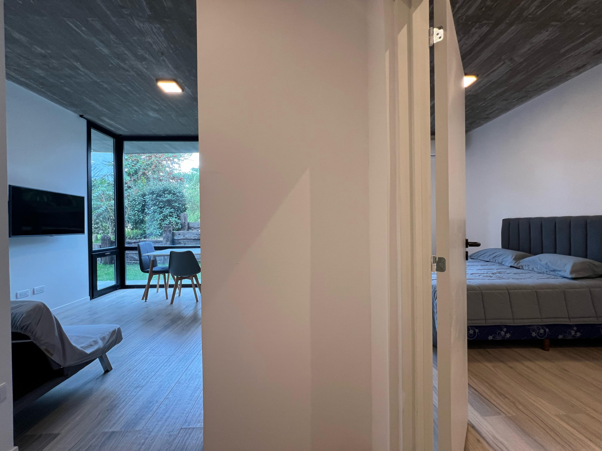

Il Buco – Ultra-modern forest retreat for long stays and remote work
Located 100 m from the beach in Cariló’s pine forest. Designed in 2025 by a foreign architect using suspended concrete volumes and high-performance walls. Equipped for long-term living with fast fiber, climate control, and private kitchens. Contact: +54 11 2127 5492 / hi@ilbuco.com.ar
Suites
Garden Suite with Panoramic Corner Window
- Barrier-free entry, suitable for reduced mobility
- Corner window facing garden, dedicated entry hall
- Window-side dining/work table, futon for extra bed (fee)

Suite with Large Private Terrace and Live Plants
- 40 m² shaded terrace with built-in planters
- Open-plan layout: sleep, cook, work in one space

Forest-View Suite with Separate Bedroom
- Corner window to pine forest
- Separate bedroom + living/work room
- 
Penthouse with Large Sunny Terrace
- Top-floor suite with direct terrace access
- Optional exclusive-use terrace (extra fee)

Facilities
- 500 Mbps fiber internet, mesh Wi-Fi
- Underfloor heating + air conditioning in each room
- Kitchen: stove, oven, 300L fridge, microwave, cookware
- Bathroom: walk-in shower + washer
- Dense foam mattress with topper + 5* bedding
- Ergonomic chair (free for stays > 1 month), twin beds on request
- Shared terrace with parrilla & dining table for 6
Policies
- Pets welcome (cleaning fee + deposit)
- No parties or unregistered visitors
- Noise sensors + people-counting cameras in shared zones
Nearby Activities & Services
- Cariló Tennis Club – Clay courts, padel, football, small gym
- Centro Integral de Entrenamiento (CIE) – Full indoor gym
- Aire Libre, Libre – Free 24-hour outdoor calisthenics gym
- Cabalgatas Dos Montes – Horse riding through dunes & forest
- Motorrad Cariló – Quad riding and fatbike rental
Dining & Coffee
- La Cabrera – Parrilla with lots of extras
- Don Benito (upscale), De Mi Campo (salads), La Parrillita (basic but good)
- Il Gatto Nero – Award-winning Napoletan pizza (Valeria del Mar)
- Panettone – Coffee, baked goods, avocado toast
- Enri’s Cariló – Burgers. Impeke in Valeria also good
- Masse – Always open